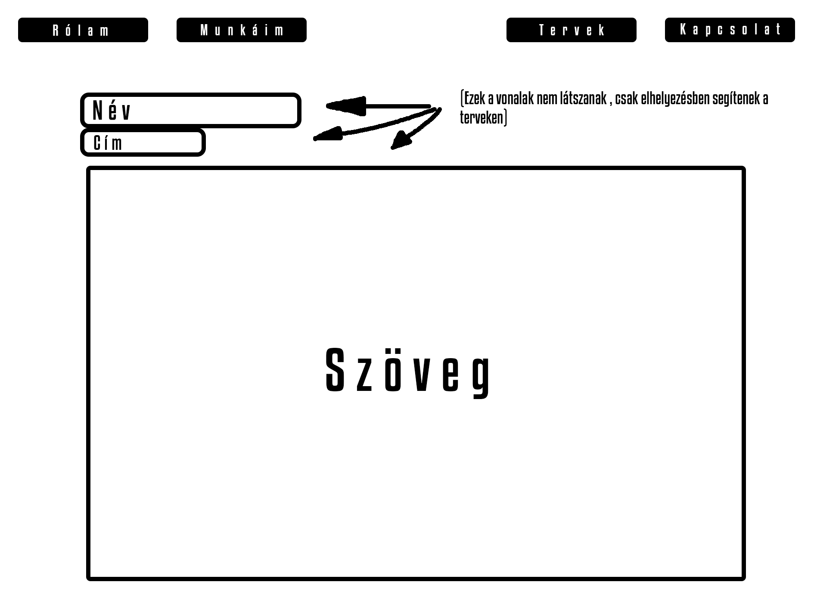
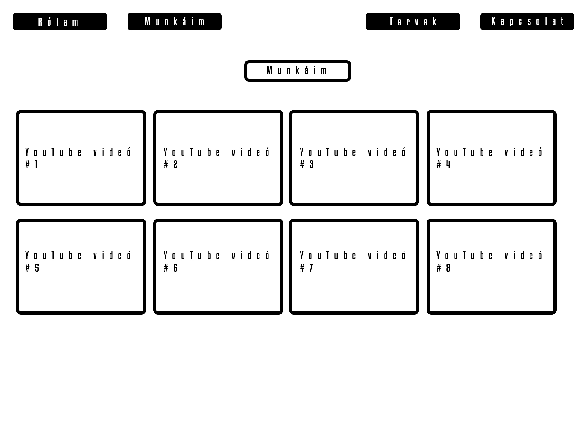
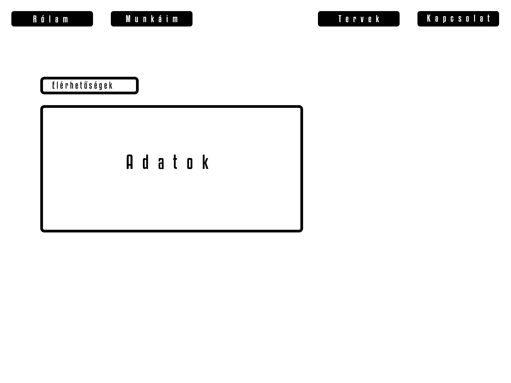
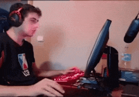

Tervek:
A weboldal terve:
Azzal a céllal indultam neki a weboldal elkészítésénél, hogy minél egyszerűbb és letisztultabb legyen.
Az oldal háttérképét egy téma képezi, mint a "MUNKÁIM" fül alatt megtalálható munkák is. Ennek minél jobban előtérbe hozása volt a cél, ezért nem készültek keretek a szövegeknek. Ehhez párosult a fehér szín a szövegeknél. Próbáltam olyan háttérképeket keresni amelyeken a fehér szöveg jól kivehető. Gombok szélét pedig lekerekítettem, hogy ne legyenek durva/hegyes hatást átadó részek az oldalon.
"Rólam" oldal terve itt található:

Talán azt tudnám mondani, hogy három részre terveztem bontani az oldalt.
Fenti egyszerű menüsávból, könnyedén lehet az oldalak között navigálni, ez egyik oldalon sem változik.
Az oldal egyszerűségének céljából nem akartam sokkal bonyolultabb elosztást használni mint a tradicionális fentről lefele, így ragaszkodtam is ehhez.
A következő képen pedig a videókat tartalmazó oldal tervét lehet látni:

Az utolsó kép pedig az "Elérhetőségek" oldal terveit ábrázolja:

A tervtől való eltérés és nehézségek:
Az eredeti tervtől nem sok helyen kellett eltérnem, mivel az egésznek "minimal art" megoldáshoz hűen indultam neki.
Munkáim fül alatt nem tudtam feltölteni az oldalt sajnos mivel, nem volt elég munkám hozzá. Valamint a méretezésükkel is problémába ütköztem mivel ha nagyobb méretűre állítottam volna a beágyazásokat akkor kissebb kijelző méretek mellett a videók nagyon kicsúsztak volna az oldalról.
Sokat vaciláltam a gombok színén. Mindenféleképpen a fehér szöveg mellé egy sötét árnyalatú gomb kellett, de eljátszadoztam vele egy ideig amíg megállapodtam a végleges árnyalat mellett.
Ezentúl szerettem volna, hogy a gomb amire a "látogató" rámegy cursorral az "felvillanjon" és egy másik színben jelenjen meg mint eredetileg. Itt is sokat gondolkoztam a színen, eleinte próbálkoztam sima fehérrel de az nem tetszett, nagyon kirívó volt számomra, nem volt "pleasing for the eye" hatása. Ezek után tettem le a voksom a világos kék mellett.
Valamint mivel nem szerettem volna semmi durvát az oldalon, amennyire lehetett mindent ilyen "simulósra" terveztem, ezért nem sima villanást szerettem volna a gombra rámutató cursorkor, hanem egy smoothabb "transitiont". Eleinte itt néhány problémába ütköztem mivel jónéhány alkalommal a böngészőm nem akarta normálisan olvasni a mentett CSS vagy éppen a HTML fájlt, de sikerült elsimítani az apróbb bökkenőket.
Több dologgal terveztem megtölteni az oldalakat, de ahogy haladtam a munkával úgy egyre kevesebb lett az olyan dolog/info/kép/videó amit megfelelőnek találtam az oldalon való megjelenítésre, emiatt kicsit szellős hatást ad az oldal az eleinte tervezettekkel ellentétben.
Későbbiekben, mikor már igazán szükséges lesz számomra a portfólió, változtatásokon fog át esni. Főleg a képeket, háttérképeket és a "MUNKÁIM" fül alatt megtalálható dolgokat fogom lecserélni.

Felhasznált oldalak:
w3schools.com
unicode-table.com
htmlcolorcodes.com
www.youtube.com